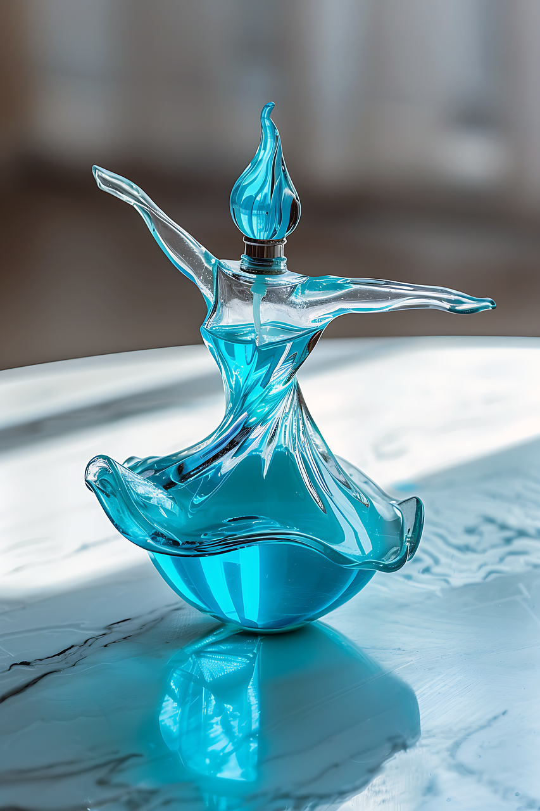

Welcome to Our Perfume Company
Discover the finest fragrances crafted with passion and precision.
Ballerine Da Pa Fume
Rayola De Blossuem

Types of Perfume
Perfumes come in various types, each with its own unique characteristics:
- Parfum: The most concentrated and long-lasting type of perfume.
- Eau de Parfum: Slightly less concentrated than Parfum, but still long-lasting.
- Eau de Toilette: A lighter concentration, suitable for everyday wear.
- Eau de Cologne: A very light concentration, often used for a refreshing splash.
Popular Fragrances
Explore our range of popular fragrances:
- Floral: A romantic and feminine scent with notes of flowers like rose, jasmine, and lily.
- Woody: A warm and earthy scent with notes of sandalwood, cedar, and vetiver.
- Fresh: A clean and invigorating scent with notes of citrus, green leaves, and aquatic elements.
- Oriental: A rich and exotic scent with notes of spices, amber, and vanilla.